TypeScript is a typed superset of JavaScript that complies into plain JavaScript
Why TypeScript is used?
TypeScript provides at least half the features of ES7 and is evolving all the time to provide more features of ES7
It would also include some ES7 features and others features.
Based on those two above statements, then why bother with TypeScript, just used ES6 instead
TypeScript is like a bridge to ES6+ from ES5.
More importanttly it promotes typing which ES does not.
Types: Boolean, String, Number
If you are not interested in types and want to use ES6 then you can, but will probably need to transpile it to eS^ to run in most browsers.
There are two main goals of TypeScript:
Provide an optional type system for JavaScript
Provide planned features from future JavaScript editions to current JavaScript engines
Language Type
TypeScript is a Static Programming Language
Types : Relies on data structures and their behaviourss to ensure that programms are correct
Rigid : The aim is to catch errors at development time, before runtime
TypeScript promotes stability and maintainability
Catches errors during development
<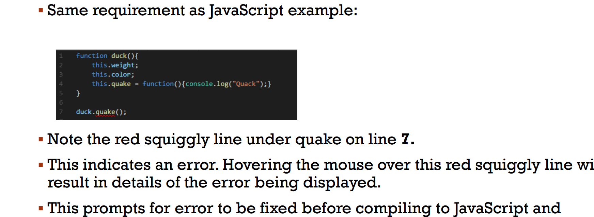
Transpile
Compiling is the general term for taking source code written in one language and transforming into another
Transpiling is as specific term for taking source code written in one language and transforming into another language that has a similar level of abstraction
TypeScript is transpiled into JavaScript for running in browsers.
Nothing prevents TypeScript being written purely in JavaScript.If transcript is written purely as typescript then after transpiling the TypeScript into JavaScript, both will be excatly the same.
Primitive Types
Boolean
String
Number
Array
Enum
Any
Void
Boolean
The most basic datatype is the simple true/false value.
Let isFalse: boolean = false;
String
String types plays a very vital role in any language, as in other languages, we use the type'string' to refer to these textual datatypes.TypeScript uses the double quote to surround string data.
Let name:string = "abc";
Number
As in JavaScript, all numbers in TypesScript are floating point values.These 'floating point'numbers get type'number'.
Let height:number= 99;
Array
TypeScript allows you to work with arrays of values.Array types can be written in one of two ways.
Let list:number[] = [1,2,3];
let list:Array = [1,2,3];
Enum
An 'enum' is an easy way of giving friendly names to sets of numeric
enum color{pen = 1, pencil= 2, eraser= 4};
console.log(Color.eraser)
Any
We may need to describe the type of varibale that we may not know when we are writing the application
let notSure:any = 4;
Void
The opposite in some ways to 'any' is 'void', the absence of having any type at all.
function warnUser():void { alert("This is my warming message");}
function
Function taking argumenent
function myfunction(value:string):number{ let num:number = value.length; return num;}
Custom Types
Varibales
Classes
access Modifiers
Interfaces
Enums
Variables
var (ES5 an dearlier versions)
let (ES6 and later versions)
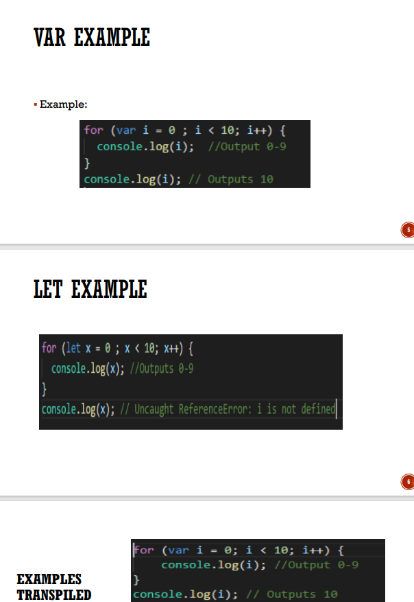
Classes
Introduced in ES6
Functions and prototype based inheritance
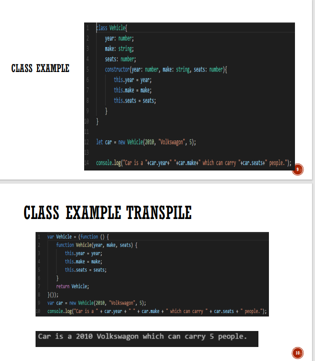
Inheritance
A derived class that derives from the base class uses the extends keywords
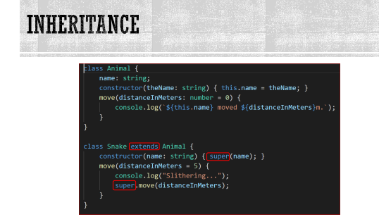
Access Modifiers
public : available on instances everywhere
private: not available for access outside the class
protected: available on child classes but not on instances directly.
Interfaces
An interface in TypeScript is pretty much the same as an interface in just about any other statically-typed language such as C# or Java
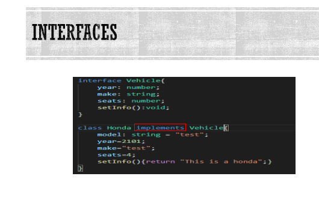
Enums
An enum type in its simplest form declares as set of constants represented by identifiers
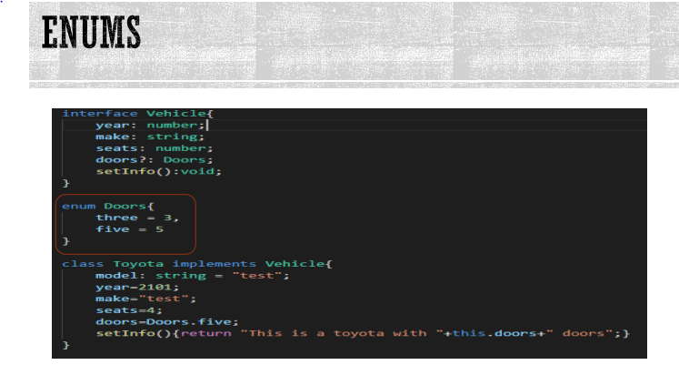
END OF TYPESCRIPT
ANGULAR 11+
Angular is JavaScript Framework which allows you to create reactive Single Page Application(SPAs)
Angular Anatomy
An Angular App is made up of at least one Module
Inside that module there are a group of componenents
Each component representing at some functionality of the App
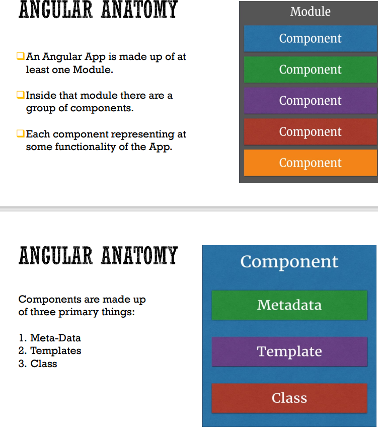
How To create Angular Application
Install the Angular CLI (Command Line Interface
npm install -g @angular/cli
Create the Angular application
ng new my-first-app
Navigate to the angular application folder:
cd my-first-app
Run the angular app:
ng serve
Angular Data Binding
Databinding can be considered communication between your Angular code and view(HTML)
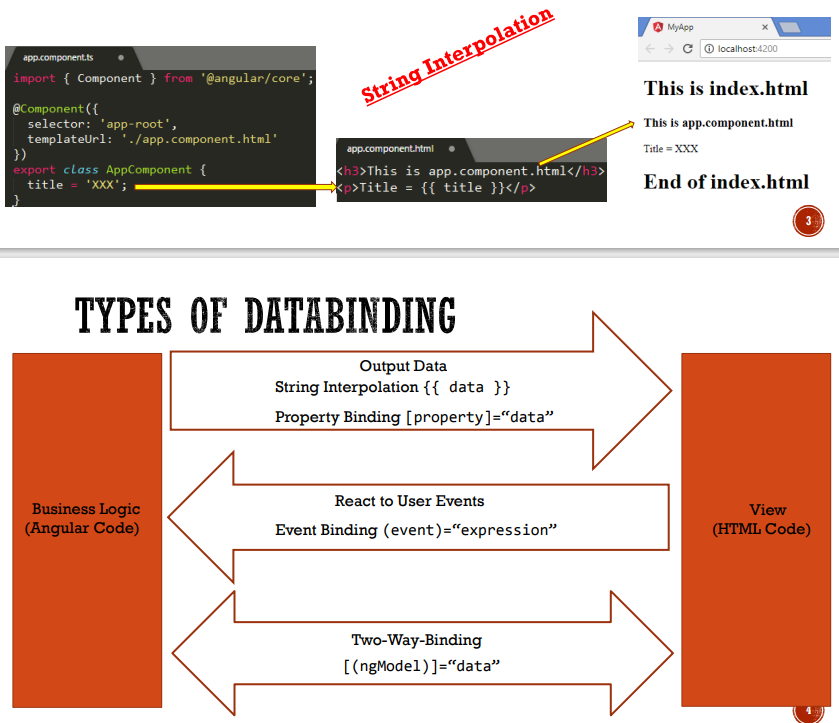
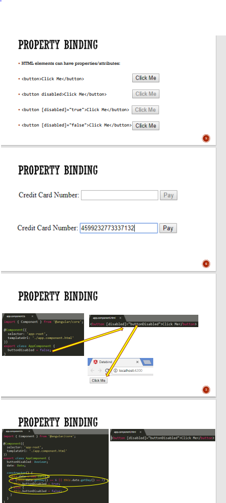
Directives
A Directives extends HTML.A Directives can be built-in or user defined.
There are 3 types of Directives
Structural Directives
Attribute Directives
Components
Structural Directives
Structural Directives change the DOM (Document Object Model) layout by adding and removing DOM elements
One of the most common structural directives is *ngFor
Attribute Directives
Atttribute directives are surrounded by brackets which signals to Angular that the appearance
or behaviour of the DOM elements within the directive may change depending on certain conditions.
Component
Components are directives that have a template
A Component has a lifecycle managed by Angular
Angular offers lifecycle hooks that provide visibility into these key life moments and the ability to act when they occur.
Service
A Service is a class with a well-defined purpose.
Service allow for better modularity, by allowing you to extract common functionality out of components
Angular comes with its own dependency injection framework for resolving dependencies, so you can have your
services depend on other services throughout your application, and dependency injection will resolve your
dependencies for you.
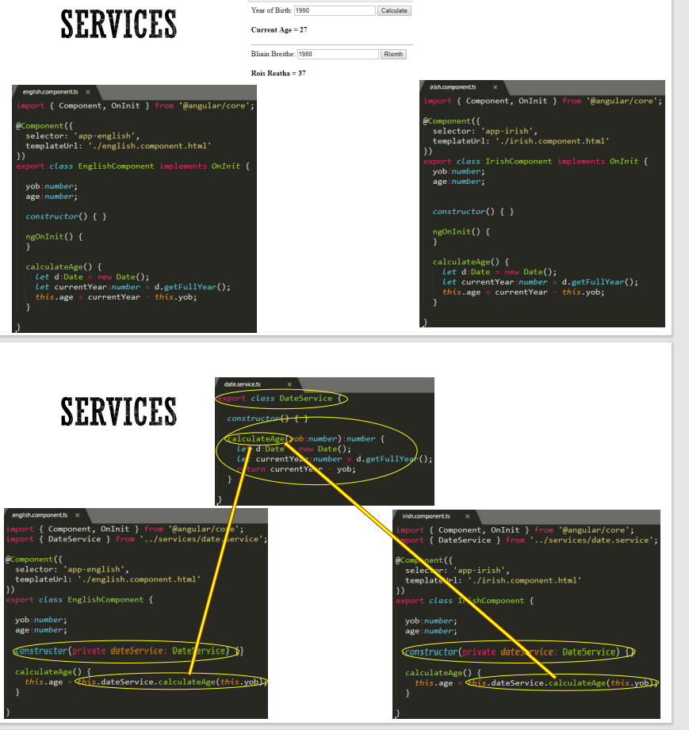
END OF ANGULAR
IONIC 5
Ionic Framework
Ionic is an SDK that helps you build native-feeling mobile apps using web technologies like HTML, CSS, and JavaScript
Why Ionic
Native apps need knowledge in many distinct domains e.g Android (Java), iOS(Swift).
Separate code bases.
Ionic uses web technologies-HTML, CSS, JavaScript.
Write Once Run Anywhere
Ionic Application
Install Ionic & Cordova
npm install -g cordova ionic
Ionic start ApplicationName blank
Ionic start myApp blank
Ionic Serve
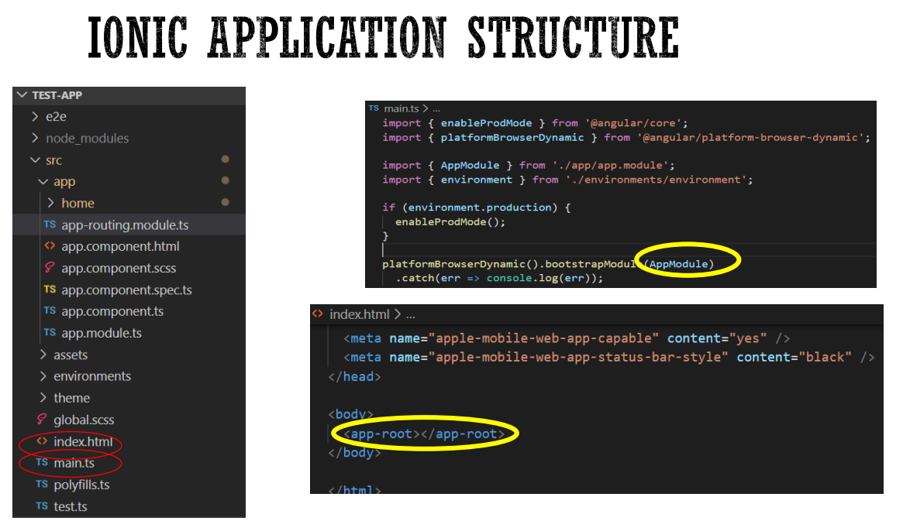
Ionic Service
A Service is a class with a well-defined purpose
Service allow for better modularity, by allowing you to extract common functionality out of components
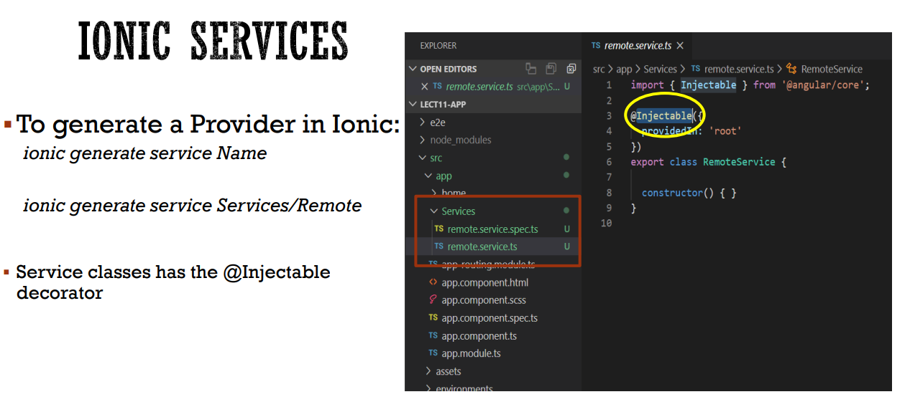
Ionic Http Client Module
Steps involved is using Ionic's HttpClient
Import Http Client Module from @angular/common/http and add it to the imports array
import {HttpClientModule}from '@angular/common/http';
imports:[BrowserModule,IonicModule.forRoot(),AppRoutingModule, HttpClientModule],
providers:[StatusBar]
HttpClient
To use functions in the HttpClientModule, we must import HttpClient into the Service in which we wish to use
it, and inject it.
import {HttpClient}from'@angular/common/http'; constructor(public http:HttpClient){}
The HppClient.get()function returns an Observable, so this must also be imported: import{Observable} from'rxjs';
HttpClient.Get()
NOTE: An Observable is a sequence of events that arrive asynchronously over time.
However, the Angular Service Http.get() which returns an Observable is always a single item
So, in the case of Http.get(), the Observable it always a single item, not a sequence of items as
is the case with most other observables.
Ionic Lists
The List is a widely used interface element in almost any mobile app, and can include content ranging basic
text all the way to buttons, toggles, icons, and thumbnails.
Both the list, which contains items, and the list items themselves can be any HTMl element
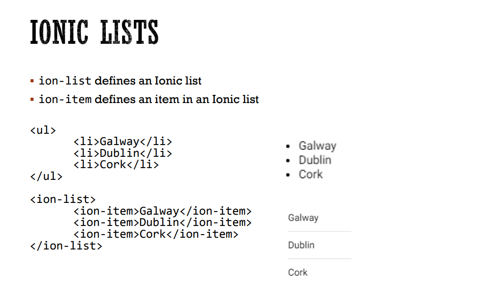
Ionic Toolbars
Toolbars are positioned above or below content. When a toolbar is placed in "Ionic header" it will appear fixed
at the top of the content, and when it is in an "Ionic header" it will appear fixed at the bottom
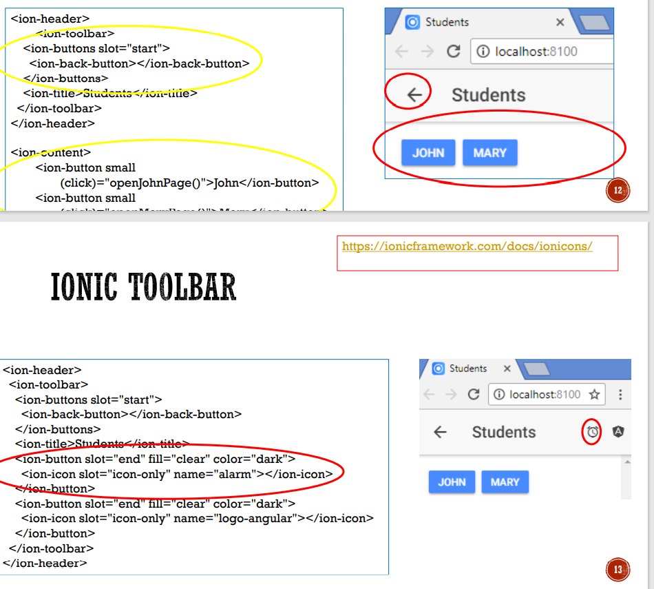
Angular Life Cycle Events
Ionic embraces the life cycle events provided by Angular.The two Angular events you will find using the most are:
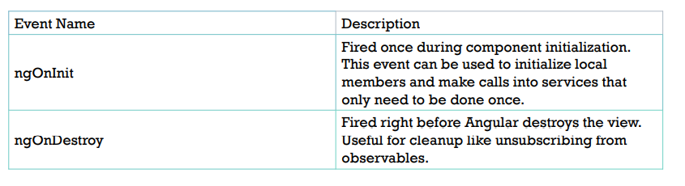
Ionic Page Events
In addition to the Angular life cycle events, Ionic Angular provides a few additional events that you can use: